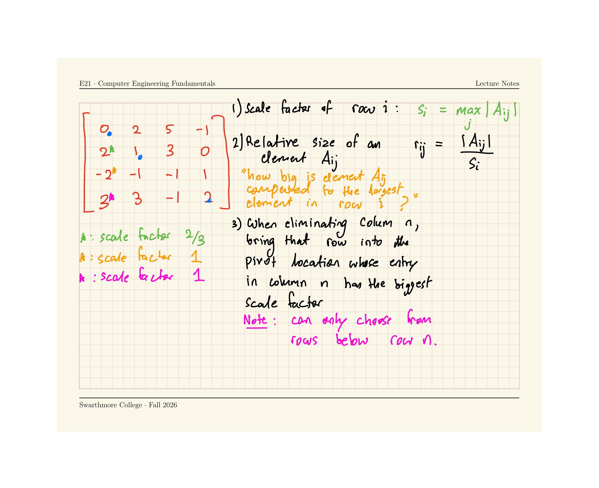

An iterative numerical algorithm for \(Ax=b\) can be terminated when the sequence \[x^{(0)} \rightarrow x^{(1)} \rightarrow x^{(2)} \rightarrow ... \rightarrow x^{(k)}\] sufficiently converges
Under certain conditions, this is guaranteed to happen.
Typically, we use while loops to implement this: Pseudo-code:
while norm(residual) > tolerance:
carry out 1 iteration of numerical method
calculate residual
Convergence Guarantees
Jacobi and Gauss-Seidel methods are guaranteed to converge to a solution of \(Ax=b\) $under either of the following conditions:
The matrix \(A\) is diagonally dominant, or
The matrix \(A\) is symmetric (\(A_{ij} = A_{ji}\) for all \(i\) and \(j\)) and positive definite (all eigenvalues are positive)
But does a solution to \(Ax=b\) even exist?
Convergence guarantees are of no use to us if the system of equations \(Ax=b\)has no solution.
When does \(Ax=b\) have no unique solution? Worksheet
Four equivalent statements about solvability of \(Ax=b\)
The following four statements are equivalent, and any one of them implies all the others.
There is a unique solution \(x\) for the equation \(Ax=b\)
Statement 1 does not hold if:
If more than one different vectors \(x\) satisfy the equation \(Ax=b\), then statement 1 does not hold.
If no vector \(x\) satisfies the equation \(Ax=b\), then statement 1 does not hold
The matrix \(A\) is not singular
A singular matrix is bad — it represents equations that cannot be solved.
The determinant of \(A\) is not equal to zero
For 2x2 matrices, the determinant of \(A = \begin{bmatrix} a & b \\ c & d \end{bmatrix}\) is \(\det A = |ad-bc|\)
\(A\) is invertible, i.e., the matrix \(A^{-1}\) exists such that \(A A^{-1} = I\)
The rows of \(A\) are linearly independent
i.e., the indvidual scalar equations in \(Ax=b\) are not multiples of each other
and no row is a linear combination of the other rows
Pivoting (in direct methods)
Python’s numpy package contains numpy.linalg.solve(A,b) which pretty much always works if a uniques solution to \(Ax=b\) exists
Calculate a scale factor for each row: \(\displaystyle s_i \equiv \max_{j} |A_{ij}|\)
Define the relative size of an element\(A_{ij}\) as \(r_{ij} \equiv \frac{|A_{ij}|}{s_i}.\) This measures how big element \(A_{ij}\) is relative to the other elements in its row.
In the Gaussian elimination procedure, before you start eliminating the entries of column \(k\), check the relative size of all elments in column \(k\) below the diagonal, i.e., determine \(\displaystyle r_{pk} = \max_j (r_{jk}), \quad j \ge k\)
Swap rows \(k\) and \(p\)

Well-conditioned and ill-conditioned matrices
The condition number of a matrix is defined as the product of the norm of the matrix and the norm of its inverse:
\[\text{cond } A = || A || \cdot || A^{-1}||\]
Note: When computing \(|| A ||\) for a matrix we will use the Frobenius norm: \[|| A || \equiv \sqrt{\sum_{i=1}^{N} \sum_{j=1}^N A_{ij}^2}.\]
>>> a = np.array([[4,2],[2,-1]])>>> np.linalg.norm(a)*np.linalg.norm(np.linalg.inv(a))np.float64(3.125)>>> np.linalg.cond(a)np.float64(2.763085794518659)>>> np.linalg.cond(a, 'fro')np.float64(3.125)
Ill-conditioned matrices lead to error accumulation
Identifying Ill-conditioned matrices
Description
Criterion
Well conditioned
\(\text{cond}(A) \approx 1\)
Ill conditioned
\(\text{cond}(A) \gg 1\)
Singular
\(\text{cond}(A) \rightarrow \infty\)
Heuristic:
If a matrix is ill-conditioned, its determinant (or the determinant of its inverse) is very small.
But what does ‘small’ mean?
A matrix’s determinant is very small if \[\det A \ll ||A||\]